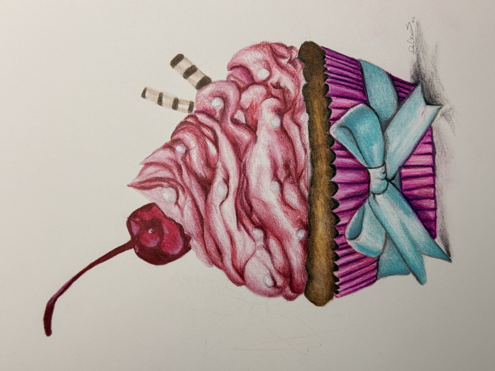
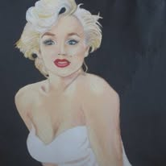
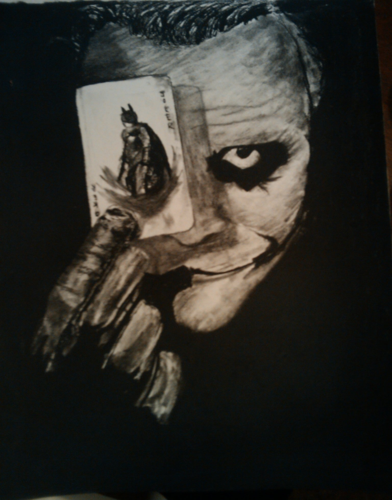

Each peace of art work represents creativity, dedication, and a part of who I am. Every piece reflects something I love, whether it is inspiration, beauty, joy, or a meaningful moment that has touched my life. By placing a bit, you are not only purchasing original art, but you are also helping support my educational journey. Thank you for your suport and for becoming a part of my story.
Each peace of art work represents creativity, dedication, and a part of who I am. Every piece reflects something I love, whether it is inspiration, beauty, joy, or a meaningful moment that has touched my life. By placing a bit, you are not only purchasing original art, but you are also helping support my educational journey. Thank you for your suport and for becoming a part of my story.
Have your portrait created using a multimedia art technique. You may choose from watercolor, charcoal, or colored pencil for their artwork.
This collection features a variety of mixed-media artwork created using watercolor, charcoal, graphite pencil, and PrismaColor colored pencils. Each piece reflects a unique combination of artistic themes that are meaningful to me.





My artwork is special because:
The order of artworks: